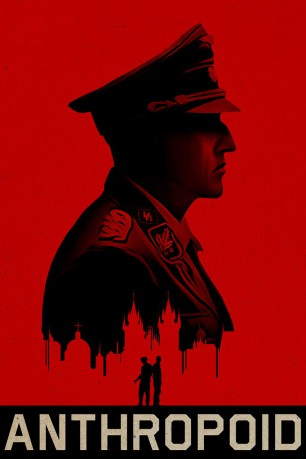
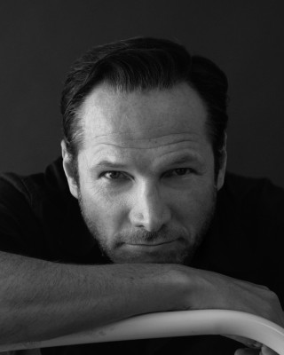
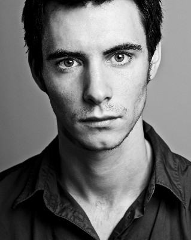

#5375 Anthropoid
 
 IMDB-Wertung: 7.2 / 10
IMDB-Wertung: 7.2 / 10  Tomatometer: 66
Tomatometer: 66  Metascore: 0
Metascore: 0 
Zweiter-Weltkrieg-Thriller, basierend auf einer wahren Geschichte, über die versuchte Ermordung von SS-Führer Reinhard Heydrich, dem Leiter des Reichssicherheitshauptamts und Organisator des Holocaust, der hinter Adolf Hitler und Heinrich Himmler zu einem der mächtigsten Drahtziehern des Dritten Reichs gehörte. Die beiden tschechischen Ex-Soldaten Josef Gabčík (Cillian Murphy) und Jan Kubiš (Jamie Dornan) kehren im kalten Dezember 1941 aus dem Exil zurück und lassen sich per Fallschirm in ihr von Nazis besetztes Heimatland abwerfen. Den beiden ausgebildeten Kriegs-Veteranen fehlen zwar sämtliche Mittel, um die sogenannte „Operation Anthropoid“ durchzuführen, dennoch könnte das Attentat auf Heydrich die Zukunft Europas gänzlich verändern und den Krieg vielleicht sogar beenden. Alle Hoffnungen ruhen in dem minutiös ausgearbeiteten Plan.
Jahr: 2016
Dauer: 121 Minuten
FSK:
Land: Tschechische Republik Studio: Bleecker Street MediaTonspuren: DD5.1 - ,
Untertitel: Deutsch,
Auflösung: 1080p (1920x808) Größe: 9277 MB
Genre: Thriller, Krieg, Geschichte, Biographie
Regisseur: Sean Ellis
Drehbuch: Glenn Campbell
Soundtrack:
Darsteller:
 Jamie Dornan als Jan Kubis
Jamie Dornan als Jan Kubis Cillian Murphy als Josef Gabcík
Cillian Murphy als Josef Gabcík Brian Caspe als Antonín
Brian Caspe als Antonín- Karel Hermánek Jr. als Ignác
-  Sean Mahon als Dr. Eduard
- Jan Hájek als Bretislav Bauman
- Marcin Dorocinski als Ladislav Vanék
 Toby Jones als Uncle Hajský
Toby Jones als Uncle Hajský- Alena Mihulová als Mrs. Moravec
 Bill Milner als Ata
Bill Milner als Ata Charlotte Le Bon als Marie Kovárníková
Charlotte Le Bon als Marie Kovárníková- Pavel Reznícek als Mr. Moravec
- Anna Geislerová als Lenka Fafková
-  Harry Lloyd als Adolf Opálka
- Václav Neuzil als Josef Valcík
- Jirí Simek als Karel Curda
- Detlef Bothe als Reinhard Heydrich
- Martin Hofmann als Repair Man
- Igor Bares als Butcher
- Roman Zach als Father Petrek
- Mish Boyko als Jan Hrubý
 Sam Keeley als Josef Bublík
Sam Keeley als Josef Bublík- Jan Budar als Josef Chalupský
- Ondrej Malý als Torturer
 Adolf Hitler als Himself , archive footage, uncredited
Adolf Hitler als Himself , archive footage, uncredited- Sára Arnsteinová als Woman at 44
- Hana Frejková als Mrs. Lukesová
- Vaclav Marek and his Blue Star als Band in Dancehall
- Justin Svoboda als German Officer at Dance Hall
- Jan Jankovský als German Soldier #1
- Jaroslav Psenicka als German Soldier #2
- John Martin als Man at Assassination
- Frantisek Stupka als Jewish Man
 David Bredin als Klein
David Bredin als Klein- Andrej Polák als Jaroslav Svarc
- Alexander von der Groeben als Hans Muller
- Marek Motlicek als Gestapo Officer
- Petr Kotík als Gestapo Officer
- Patrick Kalupa als Pannwitz
- Marek Pospíchal als Undertaker
- Nicolai Borger als German Soldier at Barricade
- Miroslav Lhotka als German Soldier at Church
- Neville Chamberlain als Himself , archive footage, uncredited
- Reinhard Heydrich als Himself , archive footage, uncredited
- Benito Mussolini als Himself , archive footage, uncredited
Datei: X:\2016(A-F)\Anthropoid (2016, FSK, 1920x808).mkv seit 21.01.2017
Festplatte: HD 2016(A-Z)
 Es gibt insgesamt 147 Filme in der Gruppe '2016(A-F)'
Es gibt insgesamt 147 Filme in der Gruppe '2016(A-F)'